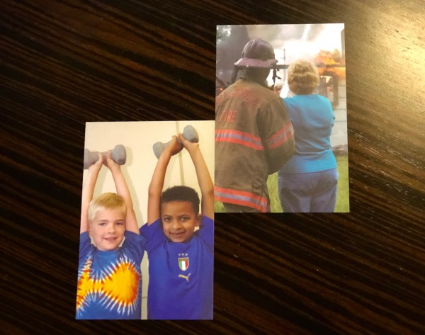

Homework Activities
My Learning Style
Visual
30% Auditory
40% Visual
30% Tactile
Visual Speaks

Image 1: I chose this image as a great comparison for all of us starting
out our journey here at the Deep Dive. Beginners all working out and helping
eachother grow.
Image 2: Now this image is how I'd like to see myself in a few years. As someone who's a vital part of my community, more than willing and finally capable of being able to really make a difference and help!
Quantitative Accomplishments
- I've helped develop, implement, and organize the network infrastructure databases for over 150 buildings across UNM's Albuquerque campuses.
- Freelance web design, social media, and content development for a local business earning them over 1500 unique visitors to their site within the first month and over 2-300 page followers on social media within that same period.
- I've taught, run, and orchestrated martial arts programs as afterschool and summercamps with on average 25 students per class and over 100 students total from the ages of 4 years old to 18 years old.
Qualitative Features
Strengths & Weaknesses
- I am extremely inventive and artistic in technological applications.
- I have a penchant for thinking out the box and creative problem solving.
- I love creating things that have an optimal balance between aesthetic and function.
Golden Circle
Why
- Technology should help augment the human experience, not takeaway. And I'd like to help build that future.
How
- By coding, designing, planning, engaging people, getting a web developer job, building a startup.
What?
- Websites, web-apps, mobile-apps, digital art, ui/ux design, community research/events.
Elevator Pitch
Version 1
Name + WHAT + WHY + HOW + Question
Hi, my name is Ryo. I build websites, apps, digital art, ui/ux; that help connect
people to the communities, services,places, and products that enrich life.
I'm doing this by learning about programming in JS, CSS/HTML, getting involved in the tech community, and working on demo projects. Why wait for the future, let's build it!
Version 2
Hi, my name is Ryo, I'm a digital creative and front end engineer. I love building beautiful yet functional web apps and sites to connect people with the communities, services, and products that enrich their lives.
At the moment I'm honing my skillsets at Deep Dive Coding Bootcamp, and jumping in Abq's web/app development scene. If you're a web development agency looking to hire or are a dev looking to collaborate look no further!
Version 3
Hi, my name is Ryo Lambert. I'm a web developer, frontend engineer, but I'd like to think of myself as a digital nomad or creative... I love building web apps, sites, and digital experiences to connect people with the communities, services, and products that enrich their lives.
What's Cooking in the Career Kitchen?

Weekly Reflections
Week 1
Thus far, everything has been fairly intense! Some of the best parts of this week has really been getting up to speed with the schedule, and familiarizing myself with the toolsets. I'm super excited about getting into the thick of it, content-wise. Also if this week's assignment's I've completed are any indicator of how the next 9 weeks will turn out it's going to be an epic adventure!
Check out the start of my data-design project
Week 2
This week seems like we're getting into the swing of things, I've just sort of settled into the schedule, but am really enjoying everything thus far. The material is at about the right difficulty level and I'm really loving the environment and the attitudes of my classmates! After such a long time from my first experiences in coding and programming, I've got to say that things are working out a lot better. I think the whole group and supportive atmosphere is helping me out a ton with the development phobia I developed after taking Java at UNM in high school.
Week 3
Man, it seems like the time is just flying by and there's never enough time in the day! I'm getting home from class and am chomping at the bit to dig into more or start 15 more projects. Sadly though, we don't have that much time. A guy can dream though right?
Time constraints aside, it's been a great week. We got assigned our capstone projects, and the idea I pitched was what our group is working on! It's going to be a really informative outdoor recreation finder web app specific to NM and the api I found from the RIDB at recreation.gov is perfect. It's a huge dataset that seems like it's going to be a challenge to parse out, but it's incredibly exciting working out our conceptual-models for the data-design. I'm curious as to what our fully flushed out implementation is going to be in perfecting our entity relationships and databases.
Week 4
Reflection about team's capacity and my place in it-
First off, the game our capstone group was playing was tons of fun. I learned a lot about my teammates
personalities and approaches. I found that Bashir is a great listener, quick to pick up the rules, and
really awesome at settling the rest of the team's nerves after moving to fast or making mistakes.
Next, with Joy I learned she's really good at bringing together group consensus and moving the team
forward. While Sarah on the otherhand is fantastic at putting together her thoughts into plans and
actions, which really helped all of us set in motion a team plan!
Personally, I feel that during our team exercise playing the game I really need to take some time to
slow down in order to maximize team efficacy. But I also found that when playing I'm really good at
taking a step back and providing new approaches to optimize team efforts. All in all, the game was
great and I learned a little about myself along the way!
Reflection- On Why I Love Coding
The biggest discovery and really most exciting part learning to code is the notion that every major
project or goal is achievable so long as you break it down into it's functional components. Being able
to see that connection between pieces of code and figure out how each piece works, then putting them
together like lego pieces and watch it work is just an amazing feeling. I'm pumped to start getting to
work on really big projects and figure out how they'll work!
Week 5
It was a tough week getting through the ups and downs with unit testing and having to learn to commit more to Github, but all in all things are going! I am though starting to feel the stress ramp up on working to get all the assignments done in time, but I'm working little by little to get everything done. Just have to keep chugging along. All that aside, I'm excited to get involved in the community here with Million Cups next week and getting our projects moved along.
Reflection- On Why I Love Coding
A tid bit as to why I love coding is because of the immense flexibility and the endless applications
it has in solving real-world problems!